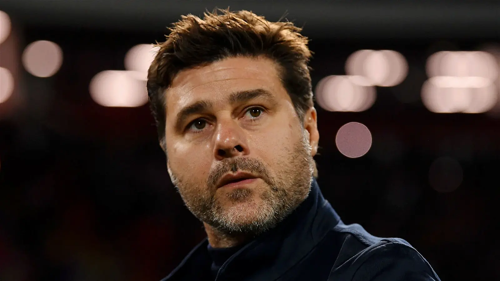
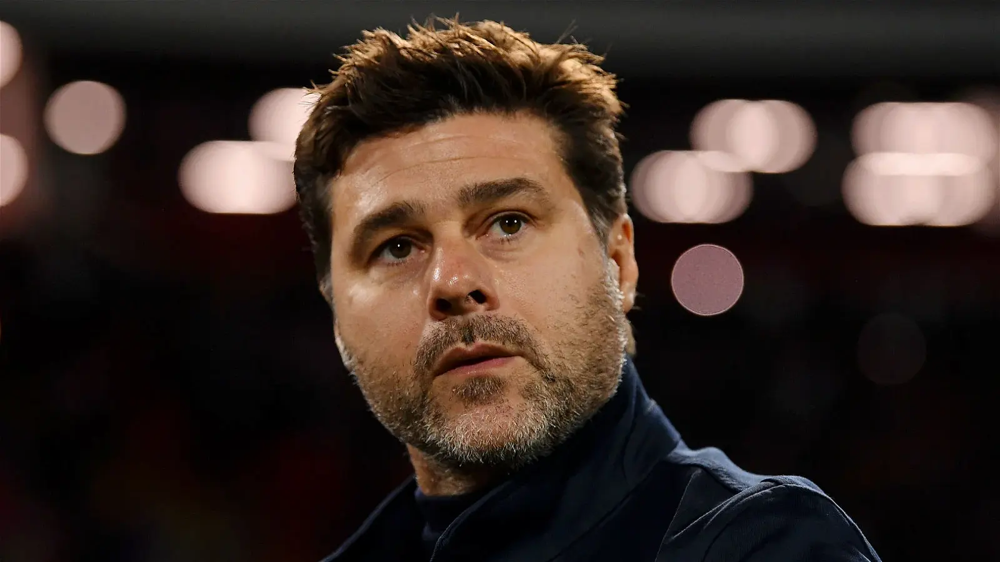

The Future of Chelsea

The 2022/23 season proved to be a challenging one for Chelsea Football Club, as they finished a disappointing 12th place in the Premier League. The campaign was marked by managerial changes, including the hiring and subsequent firing of Thomas Tuchel and Graham Potter. However, the club has now turned its gaze towards the future with the appointment of Mauricio Pochettino as the new manager. With fresh perspectives, a renewed sense of purpose, and the influx of talented players, Chelsea is set to embark on a journey of redemption and renewed success.
The Beginning of The End
Even after a disappointing start to the 2022/23 season, Chelsea's performance took an unexpected nosedive, resulting in a 12th place finish. The squad struggled with consistency and failed to live up to the high expectations set by their previous successes. Injuries to key players, such as N'Golo Kanté and Mason Mount, disrupted the team's rhythm and hindered their ability to maintain momentum. Additionally, a congested fixture schedule due to the 2022 FIFA World Cup, placed immense pressure on the squad and led to fatigue and a lack of focus. Following the disappointing start and some internal skirmishes, Chelsea's management made the difficult decision to part ways with Thomas Tuchel (a decision that some fans still question to this day), who had led the club to a Champions League triumph just two seasons before. Despite his initial success, Tuchel faced challenges in rejuvenating the squad and adapting to the increased competition in the Premier League. Graham Potter was brought in as his replacement, known for his attractive style of play and emphasis on youth development. While the idea of Potter made sense, Chelsea struggled to find consistency under his leadership, and the decison to part ways with another manager was made.
The sacking of Graham Potter, just five months into his tenure, sent shockwaves throughout the world of football. Potter, known for his dynamic approach and commendable work at Brighton & Hove Albion, seemed like the perfect fit for Chelsea's promising young squad. His philosophy of playing beautiful, attack-minded football, coupled with a well-documented focus on youth development, was viewed as a potential turning point in Chelsea's fortunes. However, Potter's reign was marred by a series of unfortunate events and a failure to produce desired results on the pitch. Under Potter, Chelsea struggled to establish a definitive style of play and experienced severe difficulty in turning possession into goal-scoring opportunities. The team also faced criticism for a perceived lack of tactical versatility, leaving them vulnerable against more adaptive Premier League opposition. The inability to adapt to changing circumstances on the pitch further exposed the squad's frailties.
Enter Mauricio Pochettino
The ongoing crisis at Stamford Bridge saw Chelsea in a quandary. After an unsatisfactory season and the abrupt dismissal of Graham Potter, the club's management was pressed into action, needing to make a crucial appointment. Among several big names rumored for the position, one stood out - Mauricio Pochettino. Renowned for his emphasis on youth development and an attractive style of football, Pochettino's appointment signaled a potentially transformative period for the struggling club.
The Argentine who previously had successful stints with Southampton and Tottenham Hotspur in the Premier League, was announced as Chelsea's new manager. His reputation for developing young talent and implementing a high-pressing, aggressive style of play, appealed to the Chelsea board. His knowledge of the Premier League, given his past experiences, was another factor that led to his appointment. Pochettino’s impressive managerial career, marked by the development of young players into world-class talents, was seen as aligning with Chelsea's vision. The appointment was met with optimism by the fans, who believed that the Argentine tactician could bring stability and help the club return to its winning ways.
Mauricio Pochettino's arrival at Stamford Bridge comes with a significant promise. His track record suggests a potential improvement in Chelsea's current situation. His philosophy emphasizes on a high-pressing game and quick transitions, which could inject much-needed dynamism into Chelsea's play. Tactically, Pochettino’s focus on a flexible style of play, adaptability, high-pressing, and a strong defensive structure could help plug the gaps that have plagued Chelsea this season. His arrival might be the boost that the Chelsea defense needs, having struggled for clean sheets under Potter.
While the task at hand is challenging, Pochettino's managerial skills, tactical acumen, and ability to foster team unity make him a promising appointment for Chelsea. Fans and pundits alike will be keenly observing how he manages to navigate through these testing times, with the hope that he will restore Chelsea to its rightful place among England's elite.

In addition to the managerial change, Chelsea are planning a huge summer revamp of the team -- offloading several players that don't fit in with the new vision and bringing in younger replacements. The team is already in the midst of offloading several key players, as highlighted in this piece by The Guardian. The reported acquisitions of top-class players like midfield commander Moises Caicedo and prolific forward Victor Osihmen showcases the club's ambition to regain their competitive edge. Caicedo, a versatile and commanding presence in midfield, adds stability and creativity to the team, while Osihmen's lethal goal-scoring ability promises to bolster Chelsea's attacking prowess. These signings not only address areas of concern but also inject a renewed sense of optimism among the fans.
Furthermore, the in-place core of talented youngsters such as Reece James, Wesley Fofana, and Noni Madueke provides depth and potential for long-term success. Pochettino's track record of nurturing young talent aligns perfectly with Chelsea's commitment to their renowned academy. The blend of experienced signings and promising youth bodes well for the club's ability to compete at the highest level for years to come.
While the 2022/23 campaign may have ended on a sour note for Chelsea, the club has wasted no time in charting a new course towards success. The disappointments of the past season will serve as a valuable lesson, reminding Chelsea of the importance of stability, unity, and resilience. The hiring of Mauricio Pochettino, with his proven track record and ability to inspire players, signifies a fresh start and a renewed sense of ambition. Under Pochettino's guidance, Chelsea will undergo a process of revitalization. His focus on building a strong team dynamic, promoting youth development, and implementing his attacking philosophy will inject new life into the squad. Pochettino's ability to maximize the potential of his players, coupled with their hunger for redemption, will be a driving force in Chelsea's resurgence. The club's influx of new talent further strengthens their prospects. Potential acquisitions of Moises Caicedo and Victor Osihmen will bring quality, skill, and a winning mentality to the team. Rice's ability to dictate play and Haaland's exceptional goal-scoring prowess will greatly enhance Chelsea's chances of competing for top honors.
Found This Thought Provoking?
I invite you to share your thoughts and perspectives with me on LinkedIn. Let's turn this monologue into a dialogue, exchanging insights and opinions to further enrich our understanding. Remember, every perspective brings us closer to the truth. Looking forward to our stimulating discussion. Connect with me today.
The Beginning of The End
Even after a disappointing start to the 2022/23 season, Chelsea's performance took an unexpected nosedive, resulting in a 12th place finish. The squad struggled with consistency and failed to live up to the high expectations set by their previous successes. Injuries to key players, such as N'Golo Kanté and Mason Mount, disrupted the team's rhythm and hindered their ability to maintain momentum. Additionally, a congested fixture schedule due to the 2022 FIFA World Cup, placed immense pressure on the squad and led to fatigue and a lack of focus. Following the disappointing start and some internal skirmishes, Chelsea's management made the difficult decision to part ways with Thomas Tuchel (a decision that some fans still question to this day), who had led the club to a Champions League triumph just two seasons before. Despite his initial success, Tuchel faced challenges in rejuvenating the squad and adapting to the increased competition in the Premier League. Graham Potter was brought in as his replacement, known for his attractive style of play and emphasis on youth development. While the idea of Potter made sense, Chelsea struggled to find consistency under his leadership, and the decison to part ways with another manager was made.
The sacking of Graham Potter, just five months into his tenure, sent shockwaves throughout the world of football. Potter, known for his dynamic approach and commendable work at Brighton & Hove Albion, seemed like the perfect fit for Chelsea's promising young squad. His philosophy of playing beautiful, attack-minded football, coupled with a well-documented focus on youth development, was viewed as a potential turning point in Chelsea's fortunes. However, Potter's reign was marred by a series of unfortunate events and a failure to produce desired results on the pitch. Under Potter, Chelsea struggled to establish a definitive style of play and experienced severe difficulty in turning possession into goal-scoring opportunities. The team also faced criticism for a perceived lack of tactical versatility, leaving them vulnerable against more adaptive Premier League opposition. The inability to adapt to changing circumstances on the pitch further exposed the squad's frailties.
Graham Potter ponders what else can be done during a shocking Chelsea loss to Fulham
The ongoing crisis at Stamford Bridge saw Chelsea in a quandary. After an unsatisfactory season and the abrupt dismissal of Graham Potter, the club's management was pressed into action, needing to make a crucial appointment. Among several big names rumored for the position, one stood out - Mauricio Pochettino. Renowned for his emphasis on youth development and an attractive style of football, Pochettino's appointment signaled a potentially transformative period for the struggling club.
The Argentine who previously had successful stints with Southampton and Tottenham Hotspur in the Premier League, was announced as Chelsea's new manager. His reputation for developing young talent and implementing a high-pressing, aggressive style of play, appealed to the Chelsea board. His knowledge of the Premier League, given his past experiences, was another factor that led to his appointment. Pochettino’s impressive managerial career, marked by the development of young players into world-class talents, was seen as aligning with Chelsea's vision. The appointment was met with optimism by the fans, who believed that the Argentine tactician could bring stability and help the club return to its winning ways.
Mauricio Pochettino's arrival at Stamford Bridge comes with a significant promise. His track record suggests a potential improvement in Chelsea's current situation. His philosophy emphasizes on a high-pressing game and quick transitions, which could inject much-needed dynamism into Chelsea's play. Tactically, Pochettino’s focus on a flexible style of play, adaptability, high-pressing, and a strong defensive structure could help plug the gaps that have plagued Chelsea this season. His arrival might be the boost that the Chelsea defense needs, having struggled for clean sheets under Potter.
While the task at hand is challenging, Pochettino's managerial skills, tactical acumen, and ability to foster team unity make him a promising appointment for Chelsea. Fans and pundits alike will be keenly observing how he manages to navigate through these testing times, with the hope that he will restore Chelsea to its rightful place among England's elite.

Pochettino looks on while managing a game during his PSG tenure
While the 2022/23 campaign may have ended on a sour note for Chelsea, the club has wasted no time in charting a new course towards success. The disappointments of the past season will serve as a valuable lesson, reminding Chelsea of the importance of stability, unity, and resilience. The hiring of Mauricio Pochettino, with his proven track record and ability to inspire players, signifies a fresh start and a renewed sense of ambition. Under Pochettino's guidance, Chelsea will undergo a process of revitalization. His focus on building a strong team dynamic, promoting youth development, and implementing his attacking philosophy will inject new life into the squad. Pochettino's ability to maximize the potential of his players, coupled with their hunger for redemption, will be a driving force in Chelsea's resurgence. The club's influx of new talent further strengthens their prospects. Potential acquisitions of Moises Caicedo and Victor Osihmen will bring quality, skill, and a winning mentality to the team. Rice's ability to dictate play and Haaland's exceptional goal-scoring prowess will greatly enhance Chelsea's chances of competing for top honors.
Found This Thought Provoking?
I invite you to share your thoughts and perspectives with me on LinkedIn. Let's turn this monologue into a dialogue, exchanging insights and opinions to further enrich our understanding. Remember, every perspective brings us closer to the truth. Looking forward to our stimulating discussion. Connect with me today.